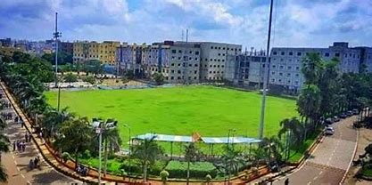
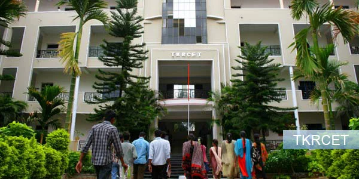

The Institution endeavours towards imparting quality education with ethical values and strives to make students technically competent to reach heights and make our nation self-reliant and globally recognized.
The Institution is committed and dedicated to mould the students into quality engineers and technologists with aplomb by providing world-class scientific and technical education through: Ensuring excellent branch wise infrastructural facilities with eminent and qualified faculty Making the institute a research/resource centre to enhance scope for consultancy and R&D

The Library housekeeping operations have been computerized and network based. Using NewGen Lib Integrated Library Management software, is being used for bibliography database of books and serials for generation and barcode. The library provides net based services to the students and staff.
The Library housekeeping operations have been computerized and network based. Using NewGen Lib Integrated Library Management software, is being used for bibliography database of books and serials for generation and barcode. The library provides net based services to the students and staff.
The campus has a sprawling of lush green play ground of 5 acres with fled lights for cricket, football and other outdoor sports. An indoor badminton court, a modern basketball court and separate game rooms have been allotted for indoor games like table tennis, caroms and chess.
A sprawling green cricket ground caters the purpose. The play ground is available for different sports. Day and night National/International semi-final and final cricket matches of various leagues are being conducted.